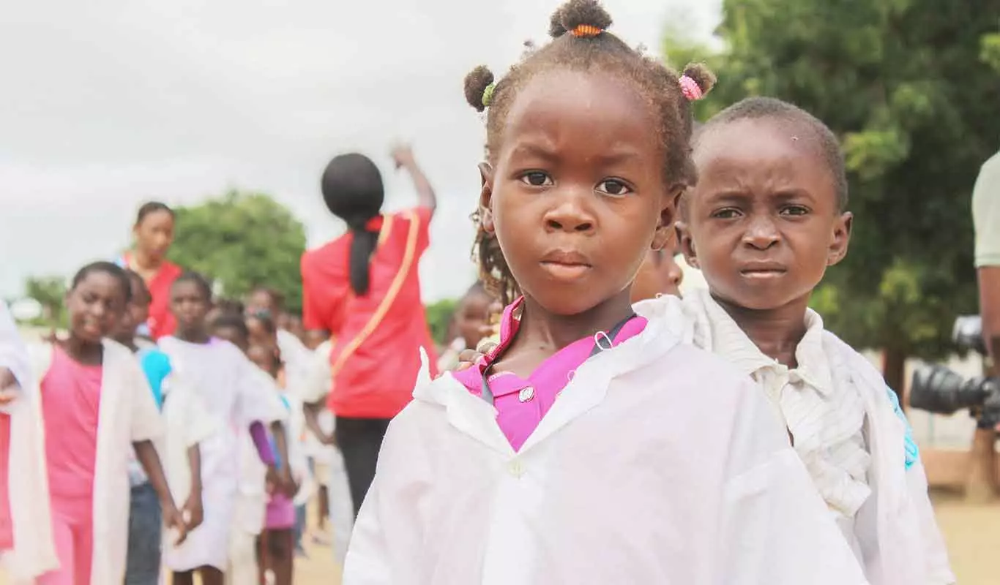
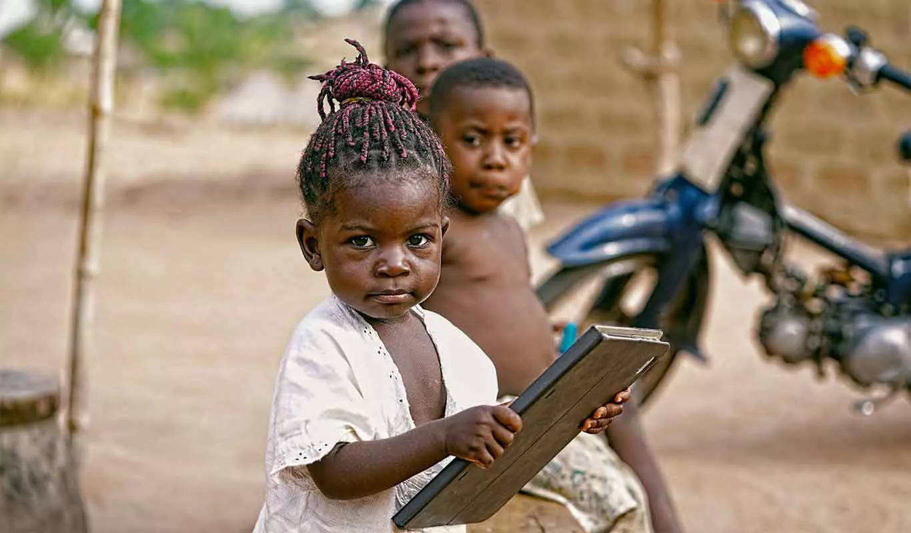

+57 3128284509

Amigables con el Medio Ambiente

Más de 40 años transformando vidas
Educación para un Futuro Mejor

Sobre Nosotros
La Fundación para la Investigación y el Desarrollo de Sucre (FIDES) fue constituida el 16 de marzo de 1983...
Apoya Nuestra CausaLo que Hacemos
Creemos en el desarrollo sostenible para todos
Desarrollo Social
Proyectos que mejoran la calidad de vida y el bienestar comunitario.
Infraestructura
Construcción y mejora de viviendas, escuelas y centros comunitarios.
Cultura y Educación
Fomentamos el arte, la cultura y el acceso a la educación de calidad.
1500
Proyectos
5000
Voluntarios
10000
Beneficiarios
500
Donantes
JUGLARES DE SABANAS